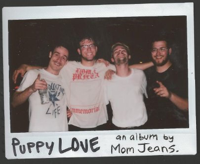
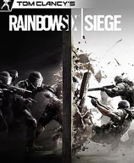

Things that interest me
- Politics and debates are very interesting to me
- People in general are interesting, the way they act and react to situation, their general behavior
- Rock climbing
- These little pictures on the internet called "memes" that can often be hilarious
- Im interested in how the world works and have a insatiable thurst for knowledge
- the artistic process, how someone creates a piece of art is very interesting
- Click here for a list of interesting facts
My Hobbies and Personal Interests
- I love comedy and watching stand up, my favorite comedians are John Mulaney and Bp Burnham
- Music is a huge part of my life and I love all tyes of music, jazz, classic, hip hop, rock, alternative
- I love theater and preforming or watching live theater, especially musicals.
- Like any other person, I love playing video games except I preer to play competitive games like Rainbow Six Siege
- I am really interested in coding and this class has really helped me develop this interest into more
- Im a little bit of a Smash Bros champion and while I dont play in "official" tournaments, I consider myself to be pretty good
- I have always been super interested in how things are built and waht makes them work anf this sparked my wanting to learn so much
- I enjoy reading and will often read for pleasure if im able to make the time, there is just something about libing in another world that is so appealing
- although I have gotten considerably rusty, I do like to draw as well when I have time
- I also collect limited edition Funko Pop Dolls and sell them for a profit online
- I used to play goal keeper on my select soccer team but wanting to commit myself to everything I do, I had to drop soccer since I had other fish to fry. But I still do like soccer and playing it.
- Whenever my group can get together, I meet up with a couple of friends and we all play DND
- Not only do I love reading/playing in a world, I also love to create new worlds. I spend a lot of time thinking and writing about worlds
Pictures of my Interests


